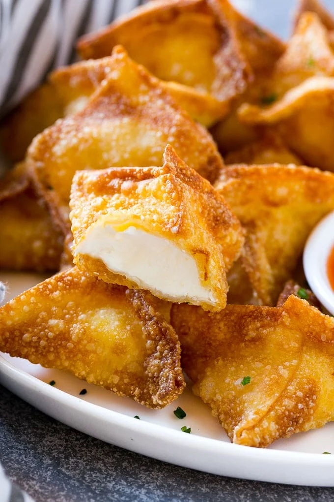

Cream Cheese Wontons

Cream cheese wontons
How to make wontons
Want to make delicious cream cheese wontons at home? This is all you need.
This is a practice project so I am blatantly plagiarizing dinneratthezoo.com.
Ingredients
- 24 wonton wrappers
- 8 ounces cream cheese softened
- 1/2 teaspoon sugar
- 1/2 teaspoon onion powder
- 1 egg beaten
- oil for frying
Steps
- Combine the cream cheese, sugar, and onion powder. Stir until well mixed.
- Place a wonton wrapper on a flat surface and drop a teaspoon of the cream cheese mixture into the center. Brush the edges of the wonton with the egg.
- Bring 2 opposite corners together in the middle of the wonton and pinch. Repeat with the other 2 corners and pinch to form a package shape.
- Repeat with the remaining wontons and cream cheese until all are filled.
- Heat 4 inches of oil in a deep pan to 350 degrees F.
- Fry 5-6 wontons at a time, turning them as needed to make sure they brown evenly. This process should take about 3-5 minutes.
- Drain the cooked wontons on paper towels and repeat the frying process with remaining wontons.
- Serve immediately with dipping sauce of choice.